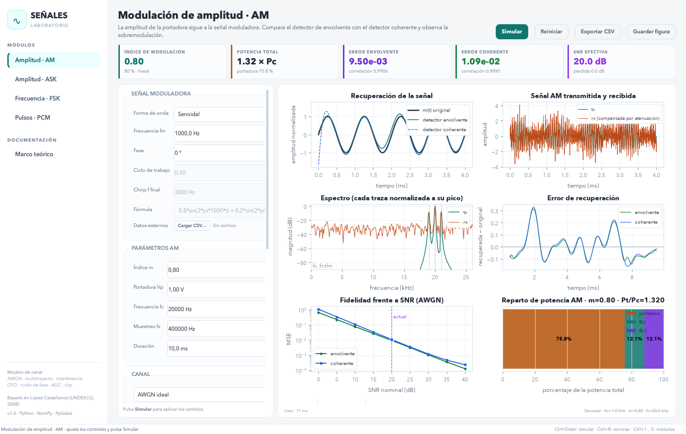
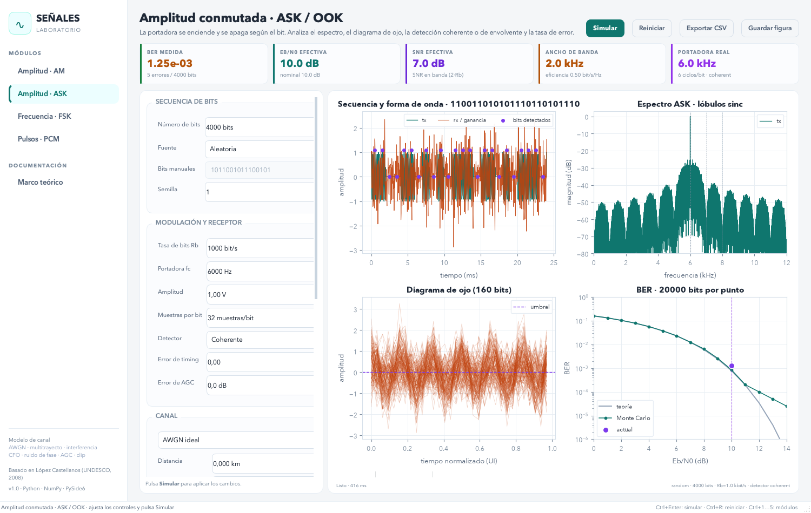
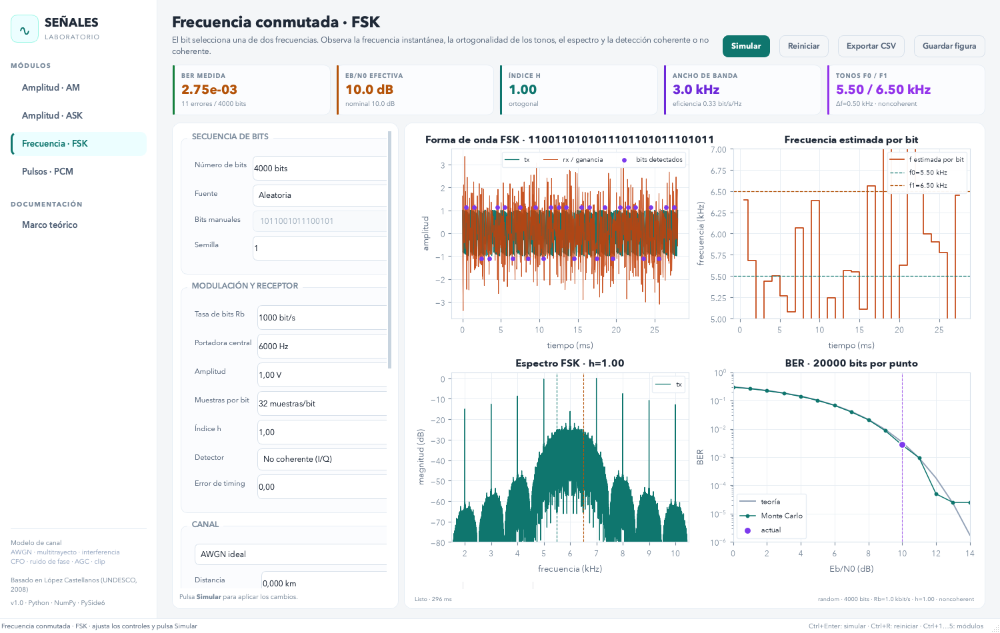
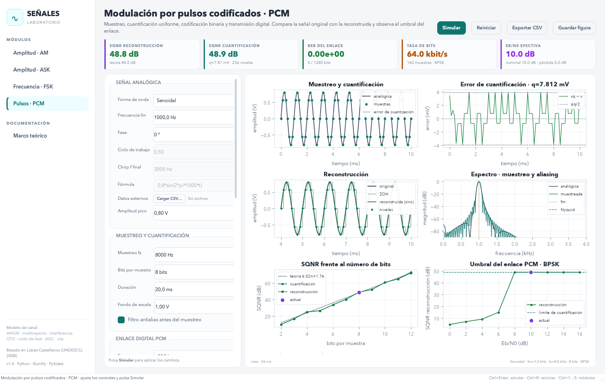
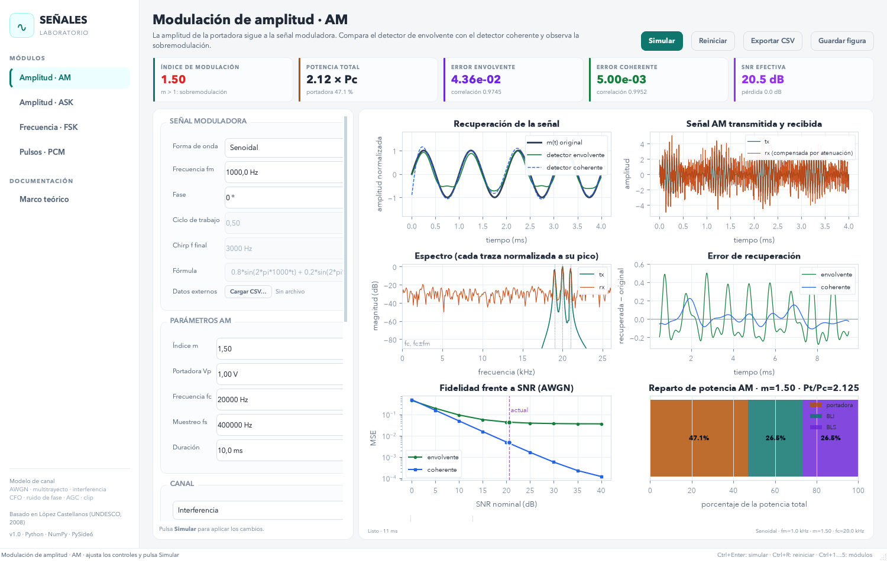
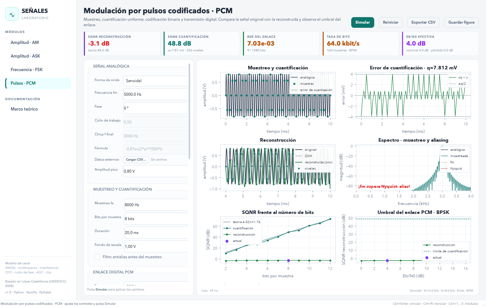

Simulador de comunicaciones
AM, ASK, FSK y PCM
Front interactivo en HTML, CSS y JavaScript para explorar modulación analógica/digital, canal, ruido y factores externos. Incluye gráficas con interpretación al pasar el ratón y guía minuciosa de cada simulación.
Interactivo
Cambia parámetros, ejecuta la simulación y observa formas de onda, espectros, BER, SQNR y recuperación.
Interpretación
Al pasar el ratón sobre cada gráfica verás serie, valores e interpretación: qué significa y cómo leerla.
Python + Web
El repositorio incluye la app de escritorio (PySide6/NumPy/SciPy) y esta versión web para GitHub Pages.
Módulos
Solo los requeridos: AM, ASK, FSK y PCM.
AM
Portadora modulada en amplitud, índice m, potencia, envolvente y detección coherente.
ASK / OOK
Bits como presencia/ausencia de portadora, umbral, forma de onda, espectro y BER.
FSK
Bits como tonos f0/f1, índice h, frecuencia estimada, espectro y BER.
PCM
Muestreo, cuantificación, codificación, enlace digital y reconstrucción con efecto umbral.
Simulador interactivo
Ajusta valores, pulsa Simular y pasa el ratón por las gráficas.
AM — Modulación de amplitud
La amplitud de la portadora sigue la señal moduladora. Compara detector de envolvente y coherente.
Guías e interpretación
Cómo funciona, por qué ciertos valores y cómo leer cada gráfica.
Factores externos y canal
- FSL:
32.45 + 20·log10(d_km) + 20·log10(f_MHz). Más distancia o frecuencia ⇒ más pérdida. - Atenuación extra: cables, obstáculos, lluvia, desapuntamiento. Se suma a FSL.
- SNR/EbN0 nominal vs efectivo: el nominal es referencia TX; el canal atenúa la señal pero no el ruido, por eso la calidad efectiva en RX cae con la pérdida.
- AWGN: ruido blanco gaussiano; causa errores y distorsión de recuperación.
- Multitrayecto: eco con retardo/ganancia/fase; puede crear ISI o cancelaciones.
- Interferencia: tono en otra frecuencia; más dañina cerca de la portadora/información.
- CFO: offset de frecuencia TX–RX; degrada detección coherente/fase.
- Clip: saturación no lineal; genera armónicos y errores.
AM — interpretación a fondo
Vp·[1+m·m(t)]·sin(2πfc t). Potencia: Pt/Pc=1+m²/2. m≤1 permite envolvente limpia; m>1 sobremodula (distorsiona envolvente). Gráficas: recuperación (original vs envolvente/coherente), RF (TX/RX), espectro (portadora y bandas laterales en fc±fm), error (recuperada−original), MSE vs SNR (fidelidad) y reparto de potencia. SNR nominal se interpreta en banda 2·fm.ASK/OOK — interpretación a fondo
Eb promedio depende de amplitud y Tb. La portadora se elige coherente con Rb (ciclos enteros por bit) para decisiones estables. Gráficas: forma de onda (bits detectados), espectro (lóbulos sinc alrededor de fc, ancho ~2Rb), y BER. Mayor Eb/N0 ⇒ menor BER; atenuación/interferencia/timing degradan.FSK — interpretación a fondo
Δf=h·Rb/2. Índice h controla separación/ortogonalidad; Carson: B≈2(Δf+Rb). Gráficas: forma de onda, frecuencia estimada (debe saltar entre f0/f1), espectro (energía en f0/f1) y BER. CFO o ruido ensucian la estimación de frecuencia.PCM — interpretación a fondo
fs (Nyquist: fs>2fm) → cuantificación uniforme n bits (SQNR≈6.02n+1.76 dB a plena escala, sin recorte) → codificación → transmisión digital (Rb=fs·n) → reconstrucción. Gráficas: muestreo/cuantificación, error ±q/2, reconstrucción (ZOH vs sinc/ideal), espectro/aliasing (Nyquist fs/2), SQNR vs bits y umbral (a Eb/N0 bajo, errores de bit dominan sobre cuantificación).Galería (app Python)
Capturas de la aplicación de escritorio y escenarios de canal.





